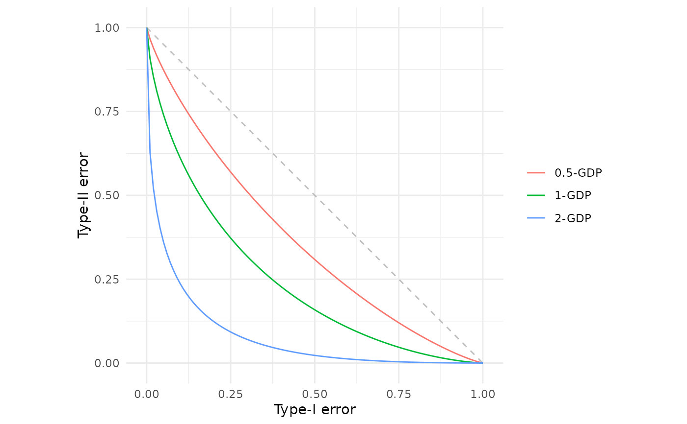
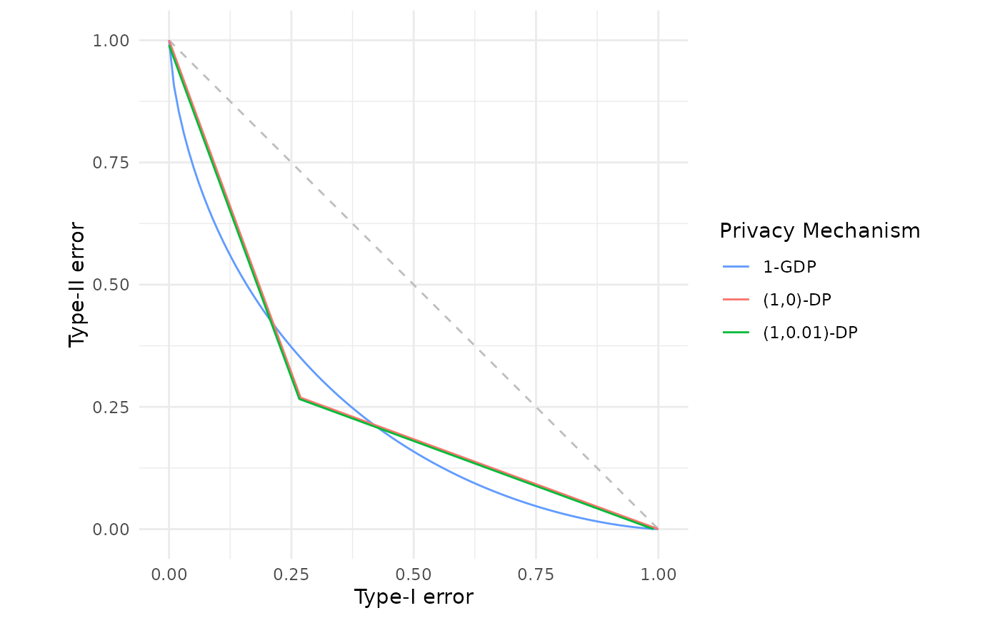

Constructs the trade-off function corresponding to \(\mu\)-Gaussian differential privacy (GDP). This framework, introduced by Dong et al. (2022), provides a natural privacy guarantee for mechanisms based on Gaussian noise, typically offering tighter composition properties and a better privacy-utility trade-off than classical \((\varepsilon, \delta)\)-differential privacy.
Value
A function of class c("fdp_gdp_tradeoff", "function") that computes the \(\mu\)-GDP trade-off function.
When called:
Without arguments: Returns a data frame with columns
alphaandbetacontaining points on a canonical grid (alpha = seq(0, 1, by = 0.01)) of the trade-off function.With an
alphaargument: Returns a data frame with columnsalphaandbetacontaining the Type-II error values corresponding to the specified Type-I error rates.
Details
Creates a \(\mu\)-Gaussian differential privacy trade-off function for use in f-DP analysis and visualisation. If you would like a reminder of the formal definition of \(\mu\)-GDP, please see further down this documentation page in the "Formal definition" Section.
The function returns a closure that stores the \(\mu\) parameter in its environment. This function can be called with or without argument supplied, either to obtain points on a canonical grid or particular Type-II error rates for given Type-I errors respectively.
Formal definition
Gaussian differential privacy (Dong et al., 2022) arises as the trade-off function corresponding to distinguishing between two Normal distributions with unit variance and means differing by \(\mu\). Without loss of generality, the trade-off function is therefore, $$G_\mu := T\left(N(0, 1), N(\mu, 1)\right) \quad\text{for}\quad \mu \ge 0.$$ This leads to, $$G_\mu(\alpha) = \Phi\left(\Phi^{-1}(1-\alpha)-\mu\right)$$ where \(\Phi\) is the standard Normal cumulative distribution function.
The most natural way to satisfy \(\mu\)-GDP is by adding Gaussian noise to construct the randomised algorithm. Theorem 1 in Dong et al. (2022) identifies the correct variance of that noise for a given sensitivity of the statistic to be released. Let \(\theta(S)\) be the statistic of the data \(S\) which is to be released. Then the Gaussian mechanism is defined to be $$M(S) := \theta(S) + \eta$$ where \(\eta \sim N(0, \Delta(\theta)^2 / \mu^2)\) and, $$\Delta(\theta) := \sup_{S, S'} |\theta(S) - \theta(S')|$$ the supremum being taken over neighbouring data sets. The randomised algorithm \(M(\cdot)\) is then a \(\mu\)-GDP release of \(\theta(S)\).
More generally, any mechanism \(M(\cdot)\) satisfies \(\mu\)-GDP if,
$$T\left(M(S), M(S')\right) \ge G_\mu$$
for all neighbouring data sets \(S, S'\).
In particular, one can seek the minimal \(\mu\) for a collection of trade-off functions using est_gdp().
References
Dong, J., Roth, A. and Su, W.J. (2022). “Gaussian Differential Privacy”. Journal of the Royal Statistical Society Series B, 84(1), 3–37. doi:10.1111/rssb.12454 .
See also
fdp() for plotting trade-off functions,
est_gdp() for finding the choice of \(\mu\) that lower bounds a collection of trade-off functions.
Additional trade-off functions can be found in
epsdelta() for classical \((\varepsilon, \delta)\)-differential privacy, and
lap() for Laplace differential privacy.
Examples
# Gaussian DP with mu = 1
gdp_1 <- gdp(1.0)
gdp_1
#> Gaussian Differential Privacy Trade-off Function
#> Parameters:
#> μ = 1
gdp_1() # View points on the canonical grid
#> alpha beta
#> 1 0.00 1.0000000000
#> 2 0.01 0.9076377519
#> 3 0.02 0.8540010552
#> 4 0.03 0.8107852300
#> 5 0.04 0.7735791962
#> 6 0.05 0.7404889772
#> 7 0.06 0.7104752348
#> 8 0.07 0.6828883689
#> 9 0.08 0.6572875447
#> 10 0.09 0.6333559978
#> 11 0.10 0.6108563084
#> 12 0.11 0.5896046545
#> 13 0.12 0.5694549941
#> 14 0.13 0.5502888381
#> 15 0.14 0.5320083619
#> 16 0.15 0.5145316046
#> 17 0.16 0.4977890266
#> 18 0.17 0.4817209820
#> 19 0.18 0.4662758214
#> 20 0.19 0.4514084439
#> 21 0.20 0.4370791723
#> 22 0.21 0.4232528681
#> 23 0.22 0.4098982255
#> 24 0.23 0.3969872025
#> 25 0.24 0.3844945564
#> 26 0.25 0.3723974632
#> 27 0.26 0.3606752006
#> 28 0.27 0.3493088835
#> 29 0.28 0.3382812416
#> 30 0.29 0.3275764304
#> 31 0.30 0.3171798704
#> 32 0.31 0.3070781087
#> 33 0.32 0.2972587003
#> 34 0.33 0.2877101051
#> 35 0.34 0.2784215977
#> 36 0.35 0.2693831893
#> 37 0.36 0.2605855587
#> 38 0.37 0.2520199920
#> 39 0.38 0.2436783284
#> 40 0.39 0.2355529131
#> 41 0.40 0.2276365547
#> 42 0.41 0.2199224878
#> 43 0.42 0.2124043388
#> 44 0.43 0.2050760958
#> 45 0.44 0.1979320814
#> 46 0.45 0.1909669276
#> 47 0.46 0.1841755545
#> 48 0.47 0.1775531493
#> 49 0.48 0.1710951484
#> 50 0.49 0.1647972211
#> 51 0.50 0.1586552539
#> 52 0.51 0.1526653374
#> 53 0.52 0.1468237531
#> 54 0.53 0.1411269626
#> 55 0.54 0.1355715965
#> 56 0.55 0.1301544453
#> 57 0.56 0.1248724502
#> 58 0.57 0.1197226955
#> 59 0.58 0.1147024006
#> 60 0.59 0.1098089140
#> 61 0.60 0.1050397066
#> 62 0.61 0.1003923662
#> 63 0.62 0.0958645924
#> 64 0.63 0.0914541921
#> 65 0.64 0.0871590747
#> 66 0.65 0.0829772492
#> 67 0.66 0.0789068198
#> 68 0.67 0.0749459839
#> 69 0.68 0.0710930285
#> 70 0.69 0.0673463289
#> 71 0.70 0.0637043461
#> 72 0.71 0.0601656256
#> 73 0.72 0.0567287967
#> 74 0.73 0.0533925714
#> 75 0.74 0.0501557444
#> 76 0.75 0.0470171936
#> 77 0.76 0.0439758806
#> 78 0.77 0.0410308527
#> 79 0.78 0.0381812448
#> 80 0.79 0.0354262826
#> 81 0.80 0.0327652865
#> 82 0.81 0.0301976767
#> 83 0.82 0.0277229801
#> 84 0.83 0.0253408386
#> 85 0.84 0.0230510191
#> 86 0.85 0.0208534277
#> 87 0.86 0.0187481260
#> 88 0.87 0.0167353529
#> 89 0.88 0.0148155531
#> 90 0.89 0.0129894138
#> 91 0.90 0.0112579145
#> 92 0.91 0.0096223948
#> 93 0.92 0.0080846496
#> 94 0.93 0.0066470682
#> 95 0.94 0.0053128444
#> 96 0.95 0.0040863131
#> 97 0.96 0.0029735303
#> 98 0.97 0.0019833765
#> 99 0.98 0.0011300058
#> 100 0.99 0.0004399602
#> 101 1.00 0.0000000000
# Stronger privacy with mu = 0.5
gdp_strong <- gdp(0.5)
gdp_strong
#> Gaussian Differential Privacy Trade-off Function
#> Parameters:
#> μ = 0.5
# Evaluate at specific Type-I error rates
gdp_1(c(0.05, 0.1, 0.25, 0.5))
#> alpha beta
#> 1 0.05 0.7404890
#> 2 0.10 0.6108563
#> 3 0.25 0.3723975
#> 4 0.50 0.1586553
# Plot and compare different mu values
fdp(gdp(0.5),
gdp(1.0),
gdp(2.0))

# Compare Gaussian DP with classical (epsilon, delta)-DP
fdp(gdp(1.0),
epsdelta(1.0),
epsdelta(1.0, 0.01),
.legend = "Privacy Mechanism")
